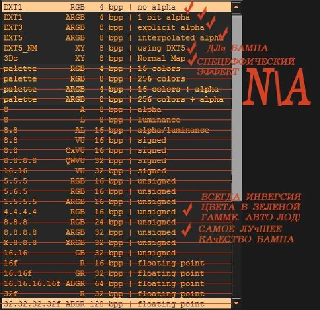

ДДС
+ альфа канал настраиваемый, 3х типов. Можно создавать дополнительные эффекты.
+ больше возможностей по работе с альфой в моделях.
+ меньший, относительно ТГА размер файлов.
*При обычных типах сжатия, ДХТ 1,3,5.
+ фиксированный размер файлов.
+ используется, как для создания текстур, так и иконок.
– значительные артефакты сжатия при стандартных значениях компрессии.
ДХТ1,3,5.
– Больший чем ТГА размер в ARGB32 режиме сжатия при равном качестве.
– Требуется установка доп. плагина.
– Для ГИМПа - ДДС плагин бывает не так просто найти.
Т.е. 2д редакторы могут не понимать этот формат из коробки.
Подробнее об опциях сохранения ДДС текстур, см. здесь.
Некоторые дополнительные пояснения и примечания по новомодным BC-xx форматам:
См. здесь.
Примечание!
В ОпенМВ завезли (в начале 2026го) завезли поддержку этих форматов ДДС текстур.
BC5-7, т.е. ОпенМВ может использовать существенно больше разновидностей ДДС файлов со всеми вытекающим отсюда для быстродействия.
Примечание!
В 2026ом (в августе) поддержку BC7 текстур завезли и МГЕ ХE UF!
https://www.nexusmods.com/morrowind/mods/57200
Т.е. новые сборки MGE, также, поддерживают этот (новомодный) формат текстур!
В т.ч. и в ТЕС КС!
МВ понимает следующие типы ДДС файлов из возможных.
DXT1 без альфы. - самый простой тип файла. Альфа канал не создается.
сжатый формат сохранения текстур БЕЗ альфы (сжатие до 8 раз).
DXT1 1бит альфы. - альфа канал резкий, без градиентов, т.е. четкая граница между прозрачностью и непрозрачностью
Требуется создание альфы вручную.
сжатый формат сохранения текстур С 1-битной альфой (сжатие до 8 раз).
DXT3 - наиболее ходовой тип альфы, наличие некоторого градиента.
Подходит для большинства текстур, у которых на краях должен быть небольшой участок полу прозрачности.
сжатый формат сохранения текстур С альфой, имеющей индексированную палитру меньше 256 цветов (сжатие до 4 раз).
DXT5 — более ровный градиент прозрачности, сохраняется немного больше деталей.
Восьмибитный альфа-канал, градиент из 256 оттенков, может потребоваться для больших объектов с протяженными участками полу прозрачности от максимальной непрозрачности к полной прозрачности.
сжатый формат сохранения текстур С полноцветной альфой (сжатие до 4 раз)
DXT5_NM — создает серый бамп и ч\б базовую текстуру. Значительное кол-во артефактов!
Применение оправдано только «особыми задачами».
ARGB 32 8.8.8.8 — самое высокое качество текстур за счет уменьшения степени сжатия. Т.е. сжатие текстур отключено.
8:8:8 RGB - несжатый вариант сохранения текстур БЕЗ альфы
8:8:8:8 ARGB - несжатый вариант сохранения текстур С альфой
Рекомендуется использовать только для самых Важных моделей!
4.4.4.4 RGB и 1.5.5.5 - дает забавный эффект, очень красивых Лодов.
Т.е. Объект как бы появляется из воздуха при приближении игрока.
Но для создания нормальных текстур, не применим.
Т.к. цвет всегда инвертированный и измененный тайлинг.
Т.е. Нормальную текстуру не получается создавать.
Palette 8-16 bit - весьма специфический и редкий формат текстуры, может использоваться для niPixelData.
Примечание.
http://stalkerin.gameru.net/wiki/index.php?title=Работа_с_форматом_.dds
Сжатие DXT всегда ведет к ухудшению качества текстуры, и при нескольких ее пересохранениях в сжатый формат качество падает до такого уровня, что ее уже нельзя восстановить средствами фотошопа.
Поэтому настоятельно рекомендую использовать сжатие только в самом последнем шаге, когда текстура полностью готова и не планируется ее дальнейшее изменение.
Сжатый формат DXT поддерживает только разрешения, кратные 8, т.е размеры сторон 8, ... 64, 128, 256, 512... пикс. и т.д. поэтому не пытайтесь сохранять текстуру неподходящего разрешения, например 400х400, кнопка ОК в таких случаях будет серой.
При работе с любой текстурой необходимо точно знать, для чего и как она будет использоваться, чтобы обработать и сохранить ее с нужными параметрами.
Если текстура с альфой сохраняется для дальнейших тестов, то используем режим (8:8:8:8 ARGB), а если вариант текстуры окончателен, то сохраняем в DXT5 или DXT1.
Примечания.
Прочие, форматы ДДС, либо не отображаются игрой вовсе, либо не случилось проверить.
Стоит заметить, что формат сжатия ДХТ1,3,5 влияет не только на альфа канал, но и на кол-во артефактов сжатия...
Впрочем для текстур примененных на небольшие объекты это не критично, но для больших поверхностей это имеет смысл учитывать!
Это особенность работы эффектов!
Поэтому, можно создавать текстуры без мип-уровней.
Впрочем, обычно редко над этим заморачиваются...
При создании ДДС файла надо учитывать цвет текстуры при создании фона между ее фрагментами.
Это актуально при создании листьев растений, или развертки тела животного.
Основной фон текстуры должен быть в тон рисунку, это сказывается при работе удаленных мип-уровней.
Примечание.
*Обращайте внимание! Иной раз ДДС модуль фотошопа грешит созданием белой альфы по умолчанию.
Не знаю, возможно частный глюк, но одна из версий плагина этим грешила.
Возможно, имеет смысл, иметь две версии ДДС плагина под фотошоп, "на всякий случай".
|
|
|
|
ДХ1, ниже ДХ3.
|
На верхнем кубе нет бампа, на нижнем текстура в ARGB
|